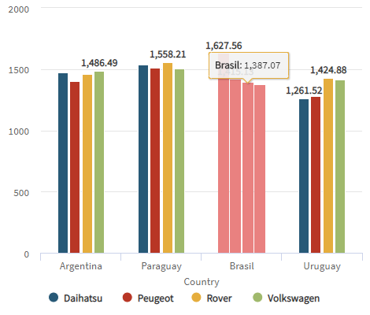
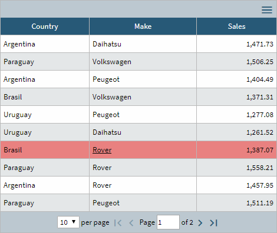
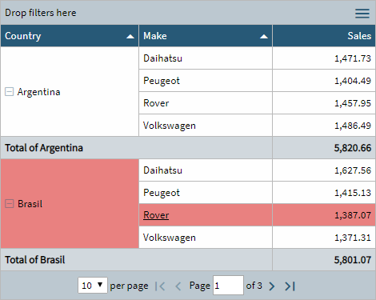
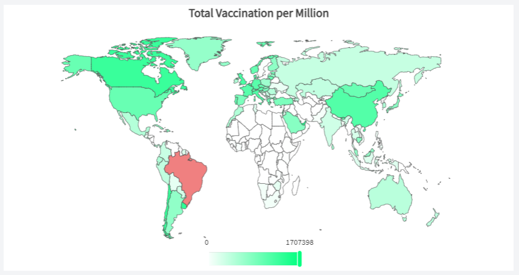
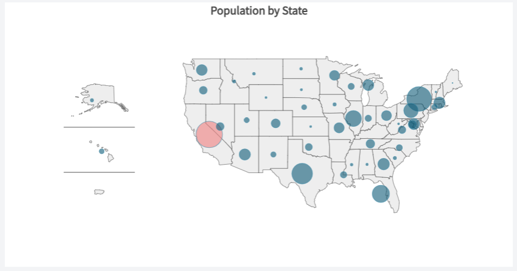
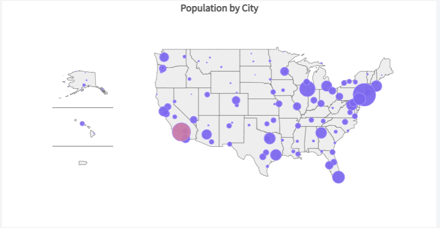

control. AllowSelection
| False |
| True |
Generators: .NET, .NET Framework, Java
Controls: QueryViewer
This property allows keeping an item selected once the ItemClick event has been raised. It can be useful when visual feedback is required after a mouse click.
It's valid for all the output types in the QueryViewer control, except for Card and Gauge Charts.
The first click on an item selects it, and all the items related to the clicked item will be selected too. An additional click on it deselects it.
There is a default color for the selection but you can change it through the Selection Color property in the associated Theme.
You can inspect the &ItemClickData variable when processing the ItemClick event to check if the value you've just clicked on has remained selected or not.
This property applies both at run-time and at design-time.
Chart

Table

Pivot Table

Maps
You can use this since GeneXus 17 Upgrade 8.
It's valid for all the output map types in the Query Viewer.
For example, the image below represents the total vaccination per million people in each country.

In this case, a Choropleth type map is used and Brazil is selected.
Now, look at this other map below. It represents the total population by state in the United States of America.

In this case, a Bubble type map is used and the state of California is selected.
Finally, look at this other map below. It represents the total population by city in the United States of America.

In this case, a Bubble type map with GeoPoint dataType is used and a city is selected.
To apply the corresponding changes when the property value is configured, execute a Build with this Only of the object.
This property is available since GeneXus 16 upgrade 4.
QueryViewer SelectionColor property
ItemDoubleClick Event
Raise ItemClick event property
| Backlinks | |
| Allow Selection property in QueryViewer (GeneXus 17 u7) | ItemClick Event |
| QueryViewer SelectionColor property |